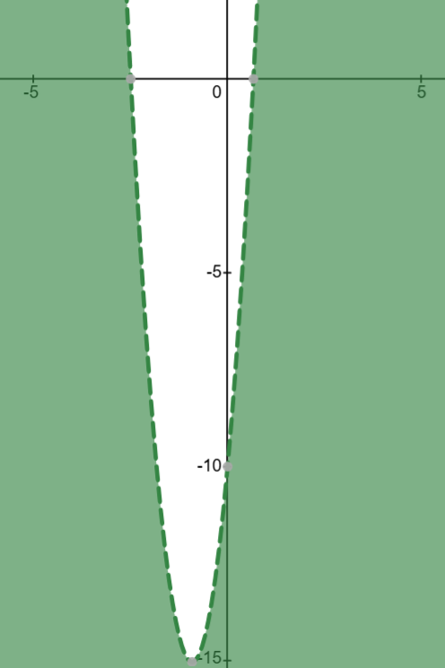
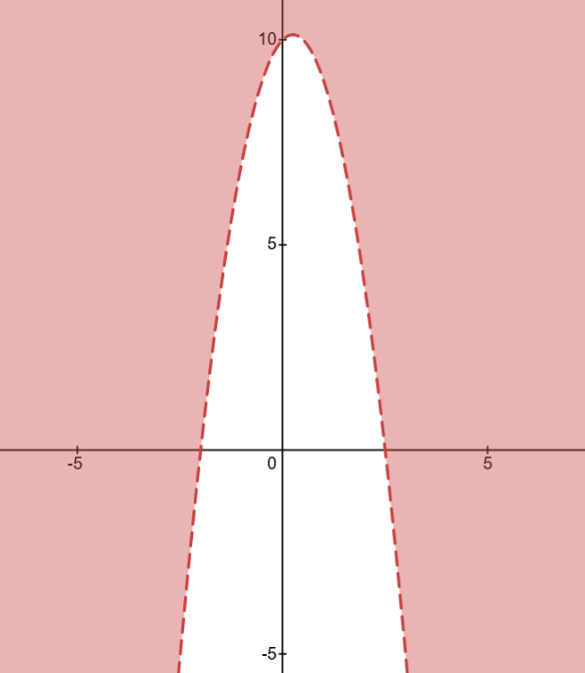
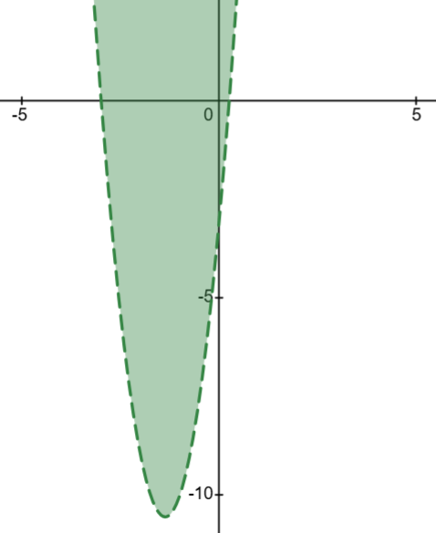
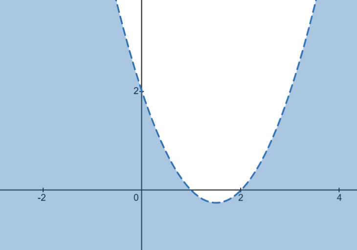
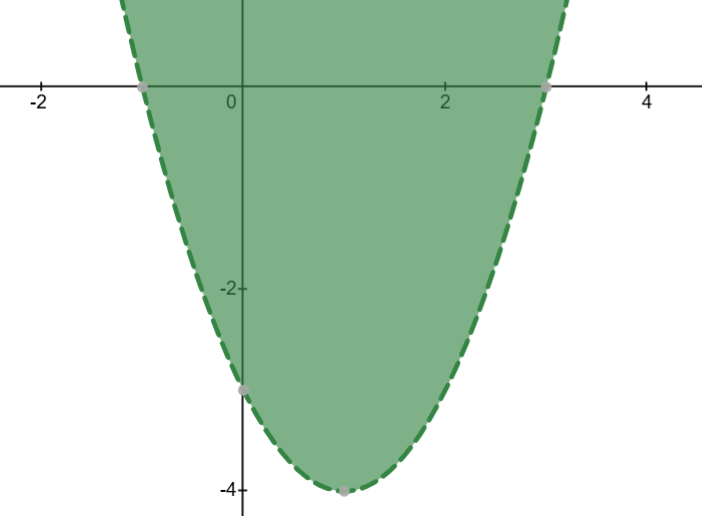
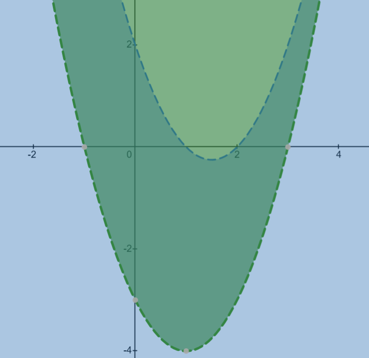
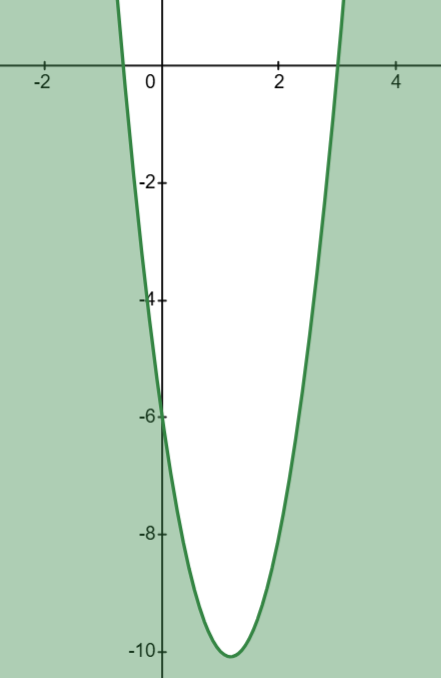
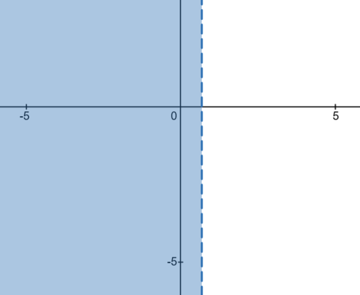
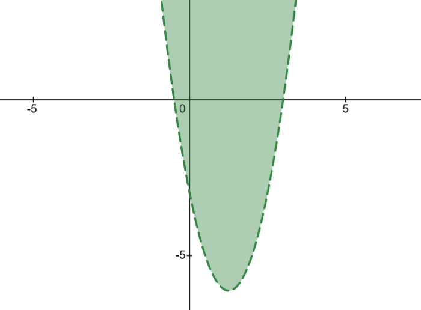
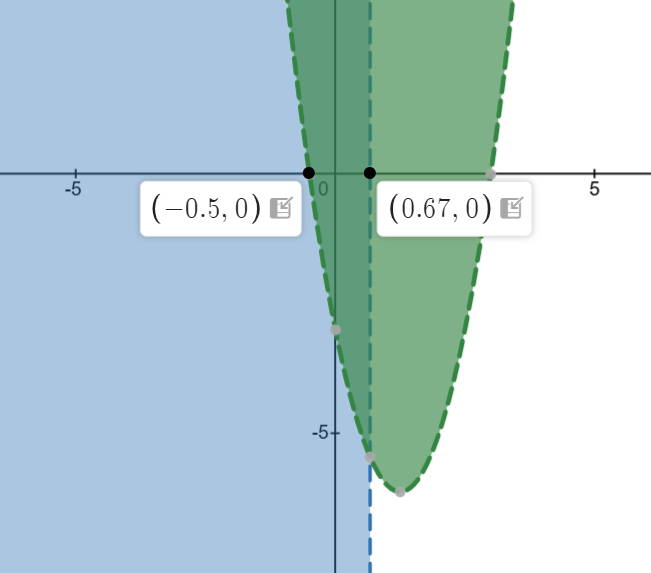

The critical values divide the number line into regions
📏 Sign Rule for Quadratic Inequalities
After factorizing to (ax + b)(cx + d) compared to 0, with positive x² coefficient:
• If < or ≤ (less than): Solution is BETWEEN the critical values
Example: (x − 2)(x + 3) < 0 → −3 < x < 2
• If > or ≥ (greater than): Solution is OUTSIDE the critical values
Example: (x − 2)(x + 3) > 0 → x < −3 or x > 2
Note: This assumes the parabola opens upward (positive x² coefficient). If the x² coefficient is negative, factor it out first and flip the inequality sign.
Step 4: Apply the sign rule
Critical values: x = −2.5 and x = 23 ≈ 0.67
Since the inequality is > 0 (greater than), the solution is OUTSIDE the critical values.
Therefore: x < −2.5 or x > 0.67
Using the sign rule: > 0 means solution is outside the critical values
📊 Graph of y = 6x² + 11x − 10
 0">
The parabola crosses the x-axis at x = −2.5 and x = 0.67
The required region where y > 0 is shaded
📊 Number Line Representation
Solution regions: x < −2.5 (left arrow) OR x > 0.67 (right arrow)
📝 Note: The circle is solid (filled) when using ≤ or ≥ symbols, indicating the value is included. The circle is hollow (open) when using < or > symbols, indicating the value is not included.
💡 Exam Tip: Sketching the graph and drawing a number line is not required in exams unless specifically asked. However, doing so can help you visualize the solution
✨ Final Answer: x < −2.5 or x > 0.67 ✨
Question 2:
Find the set of values of x for which:
10 + x − 2x² < 0
Solution:
Step 1: Rearrange to standard form
10 + x − 2x² < 0
−2x² + x + 10 < 0
Rearrange terms in descending order of powers to get standard form ax² + bx + c
Step 2: Factor out the negative coefficient
−2x² + x + 10 < 0
−1(2x² − x − 10) < 0
2x² − x − 10 > 0
Factor out −1 and flip the inequality sign (multiplying or dividing by a negative reverses the inequality)
Step 3: Factorize the quadratic
We need to find two numbers that multiply to (2)(−10) = −20 and add to −1
These numbers are −5 and +4
The critical values divide the number line into regions
📏 Sign Rule for Quadratic Inequalities
After factorizing to (ax + b)(cx + d) compared to 0, with positive x² coefficient:
• If < or ≤ (less than): Solution is BETWEEN the critical values
Example: (x − 2)(x + 3) < 0 → −3 < x < 2
• If > or ≥ (greater than): Solution is OUTSIDE the critical values
Example: (x − 2)(x + 3) > 0 → x < −3 or x > 2
Note: This assumes the parabola opens upward (positive x² coefficient). If the x² coefficient is negative, factor it out first and flip the inequality sign.
Step 5: Apply the sign rule
Critical values: x = −2 and x = 2.5
Since the inequality is > 0 (greater than), the solution is OUTSIDE the critical values.
Therefore: x < −2 or x > 2.5
Using the sign rule: > 0 means solution is outside the critical values
📊 Graph of y = 10 + x − 2x²

The parabola crosses the x-axis at x = −2 and x = 2.5
The required region where y < 0 is shaded
📊 Number Line Representation
Solution region: x < −2 or x > 2.5
📝 Note: The circle is solid (filled) when using ≤ or ≥ symbols, indicating the value is included. The circle is hollow (open) when using < or > symbols, indicating the value is not included.
💡 Exam Tip: Sketching the graph and drawing a number line is not required in exams unless specifically asked. However, doing so can help you visualize the solution
The critical values divide the number line into regions
📏 Sign Rule for Quadratic Inequalities
After factorizing to (ax + b)(cx + d) compared to 0, with positive x² coefficient:
• If < or ≤ (less than): Solution is BETWEEN the critical values
Example: (x − 2)(x + 3) < 0 → −3 < x < 2
• If > or ≥ (greater than): Solution is OUTSIDE the critical values
Example: (x − 2)(x + 3) > 0 → x < −3 or x > 2
Note: This assumes the parabola opens upward (positive x² coefficient). If the x² coefficient is negative, factor it out first and flip the inequality sign.
Step 4: Apply the sign rule
Critical values: x = −3 and x = 14 = 0.25
Since the inequality is < 0 (less than), the solution is BETWEEN the critical values.
Therefore: −3 < x < 0.25
Using the sign rule: < 0 means solution is between the critical values
📊 Graph of y = 4x² + 11x − 3

The parabola crosses the x-axis at x = −3 and x = 0.25
The required region where y < 0 is shaded
📊 Number Line Representation
Solution region: −3 < x < 0.25
📝 Note: The circle is solid (filled) when using ≤ or ≥ symbols, indicating the value is included. The circle is hollow (open) when using < or > symbols, indicating the value is not included.
💡 Exam Tip: Sketching the graph and drawing a number line is not required in exams unless specifically asked. However, doing so can help you visualize the solution
✨ Final Answer: −3 < x < 0.25 ✨
Question 4:
Use set notation to describe the set of values of x for which:
x² − 2x − 3 < 0 and x² − 3x + 2 > 0
Solution:
💡 Strategy for Compound Inequalities
AND: Both conditions must be satisfied simultaneously. Solve each inequality separately, then find the intersection (overlap) of the solution sets.
📌 Solving the first inequality: x² − 2x − 3 < 0
Step 1: Factorize the first quadratic
x² − 2x − 3 < 0
(x − 3)(x + 1) < 0
Find two numbers that multiply to −3 and add to −2: these are −3 and +1
Step 2: Find critical values for first inequality
x − 3 = 0 → x = 3 x + 1 = 0 → x = −1
Critical values: x = −1 and x = 3
These are the points where the expression equals zero
📏 Sign Rule for Quadratic Inequalities
Refer to Questions 1, 2, and 3 for the complete sign rule explanation.
Step 3: Apply the sign rule to first inequality
Critical values: x = −1 and x = 3
Since the inequality is < 0 (less than), the solution is BETWEEN the critical values.
First inequality solution: −1 < x < 3
Using the sign rule: < 0 means solution is between the critical values
First inequality result: −1 < x < 3
📌 Solving the second inequality: x² − 3x + 2 > 0
Step 4: Factorize the second quadratic
x² − 3x + 2 > 0
(x − 1)(x − 2) > 0
Find two numbers that multiply to +2 and add to −3: these are −1 and −2
Step 5: Find critical values for second inequality
x − 1 = 0 → x = 1 x − 2 = 0 → x = 2
Critical values: x = 1 and x = 2
These are the points where the expression equals zero
📏 Sign Rule for Quadratic Inequalities
Refer to Questions 1, 2, and 3 for the complete sign rule explanation.
Step 6: Apply the sign rule to second inequality
Critical values: x = 1 and x = 2
Since the inequality is > 0 (greater than), the solution is OUTSIDE the critical values.
Second inequality solution: x < 1 or x > 2
Using the sign rule: > 0 means solution is outside the critical values
Second inequality result: x < 1 or x > 2
Step 7: Find the intersection (AND condition)
First inequality: −1 < x < 3
Second inequality: x < 1 or x > 2
Intersection: Values of x must satisfy BOTH conditions:
• From −1 < x < 3 AND x < 1: we get −1 < x < 1 The first inequality allows values from −1, but the second inequality restricts us to stop at 1
• From −1 < x < 3 AND x > 2: we get 2 < x < 3 The first inequality allows us to finish at 3, but the second inequality prevents us from starting at −1, so we start at 2
📊 Graph Analysis

y = x² − 2x − 3

y = x² − 3x + 2

Both graphs combined
In the combined graph (right), identify the overlapping shaded region where both conditions are satisfied simultaneously
📊 Number Line Representation
Two solution regions: −1 < x < 1 OR 2 < x < 3
📝 Note: The circle is solid (filled) when using ≤ or ≥ symbols, indicating the value is included. The circle is hollow (open) when using < or > symbols, indicating the value is not included.
💡 Exam Tip: Sketching the graph and drawing a number line is not required in exams unless specifically asked. However, doing so can help you visualize the solution
✨ Final Answer: −1 < x < 1 or 2 < x < 3 ✨
Question 5:
Given that x ≠ 0, find the set of values of x for which:
6x² + 7x ≤ 3
Solution:
Step 1: Multiply through by x²
6x² + 7x ≤ 3
Multiply both sides by x² (note: x² is always positive, so inequality sign stays the same):
6 + 7x ≤ 3x²
Since x² > 0 for all x ≠ 0, we don't reverse the inequality
Step 2: Rearrange to standard form
6 + 7x ≤ 3x²
0 ≤ 3x² − 7x − 6
3x² − 7x − 6 ≥ 0
Rearrange with x² term positive on the left
Step 3: Factorize the quadratic
We need to find two numbers that multiply to (3)(−6) = −18 and add to −7
These numbers are −9 and 2
The critical values divide the number line into regions
📏 Sign Rule for Quadratic Inequalities
Refer to Questions 1, 2, and 3 for the complete sign rule explanation and examples.
Step 5: Apply the sign rule
Critical values: x = −0.67 and x = 3
Since the inequality is ≥ 0 (greater than or equal to), the solution is OUTSIDE the critical values (including the endpoints).
Therefore: x ≤ −0.67 or x ≥ 3
Using the sign rule: ≥ 0 means solution is outside the critical values, including the boundary points
📊 Graph of y = 3x² − 7x − 6

The parabola crosses the x-axis at x = −0.67 and x = 3
The required region where y ≥ 0 is shaded
📊 Number Line Representation
Solution regions: x ≤ −0.67 (left arrow) OR x ≥ 3 (right arrow)
📝 Note: The circle is solid (filled) when using ≤ or ≥ symbols, indicating the value is included. The circle is hollow (open) when using < or > symbols, indicating the value is not included.
💡 Exam Tip: Sketching the graph and drawing a number line is not required in exams unless specifically asked. However, doing so can help you visualize the solution.
✨ Final Answer: x ≤ −0.67 or x ≥ 3 ✨
Question 6:
Find the set of values of x for which:
a 2(3x − 1) < 4 − 3x b 2x² − 5x − 3 < 0 c both 2(3x − 1) < 4 − 3xand 2x² − 5x − 3 < 0
Solution:
📌 Part (a): Solving 2(3x − 1) < 4 − 3x
Step 1: Expand the left side
2(3x − 1) < 4 − 3x
6x − 2 < 4 − 3x
Distribute 2 across the bracket
Step 2: Collect x terms on one side
6x + 3x − 2 < 4
9x − 2 < 4
Add 3x to both sides
Step 3: Solve for x
9x < 4 + 2
9x < 6 x < 69 x < 23 = 0.67
Add 2 to both sides, divide by 9, and simplify
Part (a) result: x < 0.67
📌 Part (b): Solving 2x² − 5x − 3 < 0
Step 4: Factorize the quadratic
We need to find two numbers that multiply to (2)(−3) = −6 and add to −5
These numbers are −6 and 1
The critical values divide the number line into regions
📏 Sign Rule for Quadratic Inequalities
Refer to Questions 1, 2, and 3 for the complete sign rule explanation.
Step 6: Apply the sign rule
Critical values: x = −0.5 and x = 3
Since the inequality is < 0 (less than), the solution is BETWEEN the critical values.
Therefore: −0.5 < x < 3
Using the sign rule: < 0 means solution is between the critical values
Part (b) result: −0.5 < x < 3
📌 Part (c): Finding the intersection (AND condition)
Step 7: Find the intersection of both solutions
Part (a): x < 0.67
Part (b): −0.5 < x < 3
Intersection: Values of x must satisfy BOTH conditions:
−0.5 < x < 0.67 The Part (b) (quadratic) allows values from −0.5, but Part (a) (linear) restricts us to stop at 0.67
📊 Graph Analysis

Linear: x < 0.67

Quadratic: y = 2x² − 5x − 3

Both combined
In the combined graph (right), identify the overlapping shaded region where both conditions are satisfied simultaneously
📊 Number Line Representation
Solution region: −0.5 < x < 0.67
📝 Note: The circle is solid (filled) when using ≤ or ≥ symbols, indicating the value is included. The circle is hollow (open) when using < or > symbols, indicating the value is not included.
💡 Exam Tip: Sketching the graph and drawing a number line is not required in exams unless specifically asked. However, doing so can help you visualize the solution.
✨ Final Answer: (a)x < 0.67 (b) −0.5 < x < 3 (c) −0.5 < x < 0.67 ✨